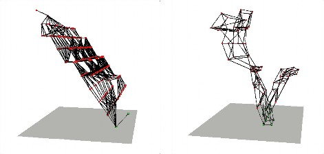
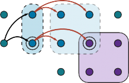
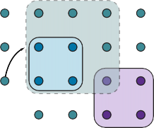
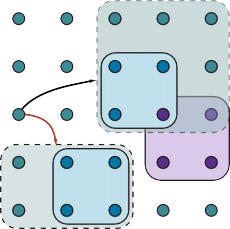

Definition of Classical Planning
Classical planning is defined as the task of finding a sequence of actions to accomplish a
goal in a discrete, deterministic, static, fully observable environment. We have seen two ap-
proaches to this task: the problem-solving agent of Chapter 3 and the hybrid propositional
logical agent of Chapter 7. Both share two limitations. First, they both require ad hoc heuris-
tics for each new domain: a heuristic evaluation function for search, and hand-written code
for the hybrid wumpus agent. Second, they both need to explicitly represent an exponentially
large state space. For example, in the propositional logic model of the wumpus world, the
axiom for moving a step forward had to be repeated for all four agent orientations, T time
steps, and n2 current locations.In response to these limitations, planning researchers have invested in a factored repre-using a family of languages called PDDL, the Planning Domain Definition Lan-
guage (Ghallab et al., 1998), which allows us to express all 4Tn2 actions with a single action
schema, and does not need domain-specific knowledge. Basic PDDL can handle classical
planning domains, and extensions can handle non-classical domains that are continuous, par-
tially observable, concurrent, and multi-agent. The syntax of PDDL is based on Lisp, but we
will translate it into a form that matches the notation used in this book.In PDDL, a state is represented as a conjunction of ground atomic fluents. Recall that
“ground” means no variables, “fluent” means an aspect of the world that changes over time,Section 11.1 Definition of Classical Planning 363
and “ground atomic” means there is a single predicate, and if there are any arguments, they
must be constants. For example, Poor∧Unknown might represent the state of a hapless agent,
and At(Truck1, Melbourne) ∧At(Truck2, Sydney) could represent a state in a package delivery
problem. PDDL uses database semantics: the closed-world assumption means that any
fluents that are not mentioned are false, and the unique names assumption means that Truck1
and Truck2 are distinct.The following fluents are not allowed in a state: At(x, y) (because it has variables), ¬Poor
(because it is a negation), and At(Spouse(Ali), Sydney) (because it uses a function symbol,
Spouse). When convenient, we can think of the conjunction of fluents as a set of fluents.An action schema represents a family of ground actions. For example, here is an action Action schema
schema for flying a plane from one location to another:
Action(Fly(p, from, to),
Precond:At(p, from) ∧Plane(p) ∧Airport(from) ∧Airport(to)
Effect:¬At(p, from) ∧At(p, to))
The schema consists of the action name, a list of all the variables used in the schema, a
precondition and an effect. The precondition and the effect are each conjunctions of literals Precondition
(positive or negated atomic sentences). We can choose constants to instantiate the variables,
yielding a ground (variable-free) action:Action(Fly(P1, SFO, JFK),
Precond:At(P1, SFO) ∧Plane(P1) ∧Airport(SFO) ∧Airport(JFK)
Effect:¬At(P1, SFO) ∧At(P1, JFK))
A ground action a is applicable in state s if s entails the precondition of a; that is, if every
positive literal in the precondition is in s and every negated literal is not.The result of executing applicable action a in state s is defined as a state s′ which is
represented by the set of fluents formed by starting with s, removing the fluents that appear asEffect
negative literals in the action’s effects (what we call the delete list or DEL(a)), and adding the Delete list
fluents that are positive literals in the action’s effects (what we call the add list or ADD(a)): Add list
Result(s, a) = (s− Del(a)) ∪ Add(a) . (11.1)
For example, with the action Fly(P1, SFO, JFK), we would remove the fluent At(P1, SFO)
and add the fluent At(P1, JFK).
A set of action schemas serves as a definition of a planning domain. A specific problem
within the domain is defined with the addition of an initial state and a goal. The initialis a conjunction of ground fluents (introduced with the keyword Init in Figure 11.1).
As with all states, the closed-world assumption is used, which means that any atoms that
are not mentioned are false. The goal (introduced with Goal) is just like a precondition: a
conjunction of literals (positive or negative) that may contain variables. For example, the goal
At(C1, SFO) ∧¬At(C2, SFO) ∧At(p, SFO), refers to any state in which cargo C1 is at SFO but
C2 is not, and in which there is a plane at SFO.Example domain: Air cargo transport
Figure 11.1 shows an air cargo transport problem involving loading and unloading cargo and
flying it from place to place. The problem can be defined with three actions: Load, Unload,
and Fly. The actions affect two predicates: In(c, p) means that cargo c is inside plane p,
and At(x, a) means that object x (either plane or cargo) is at airport a. Note that some care364 Chapter 11 Automated Planning
Init(At(C1, SFO) ∧ At(C2, JFK) ∧ At(P1, SFO) ∧ At(P2, JFK)
∧ Cargo(C1) ∧ Cargo(C2) ∧ Plane(P1) ∧ Plane(P2)
∧ Airport(JFK) ∧ Airport(SFO))
Goal(At(C1, JFK) ∧ At(C2, SFO))Action(Load(c, p, a),
Precond: At(c, a) ∧ At(p, a) ∧ Cargo(c) ∧ Plane(p) ∧ Airport(a)
Effect: ¬ At(c, a) ∧ In(c, p))
Action(Unload(c, p, a),Precond: In(c, p) ∧ At(p, a) ∧ Cargo(c) ∧ Plane(p) ∧ Airport(a)
Effect: At(c, a) ∧ ¬ In(c, p))
Action(Fly(p, from, to),Precond: At(p, from) ∧ Plane(p) ∧ Airport(from) ∧ Airport(to)
Effect: ¬ At(p, from) ∧ At(p, to))
Figure 11.1 A PDDL description of an air cargo transportation planning problem.
must be taken to make sure the At predicates are maintained properly. When a plane flies
from one airport to another, all the cargo inside the plane goes with it. In first-order logic it
would be easy to quantify over all objects that are inside the plane. But PDDL does not have
a universal quantifier, so we need a different solution. The approach we use is to say that a
piece of cargo ceases to be At anywhere when it is In a plane; the cargo only becomes At the
new airport when it is unloaded. So At really means “available for use at a given location.”
The following plan is a solution to the problem:[Load(C1, P1, SFO), Fly(P1, SFO, JFK), Unload(C1, P1, JFK),
Load(C2, P2, JFK), Fly(P2, JFK, SFO), Unload(C2, P2, SFO)] .
Example domain: The spare tire problem
Consider the problem of changing a flat tire (Figure 11.2). The goal is to have a good spare
tire properly mounted onto the car’s axle, where the initial state has a flat tire on the axle and
a good spare tire in the trunk. To keep it simple, our version of the problem is an abstract
one, with no sticky lug nuts or other complications. There are just four actions: removing
the spare from the trunk, removing the flat tire from the axle, putting the spare on the axle,
and leaving the car unattended overnight. We assume that the car is parked in a particu-
larly bad neighborhood, so that the effect of leaving it overnight is that the tires disappear.
[Remove(Flat, Axle), Remove(Spare, Trunk), PutOn(Spare, Axle)] is a solution to the problem.Example domain: The blocks world
One of the most famous planning domains is the blocks world. This domain consists of a set
of cube-shaped blocks sitting on an arbitrarily-large table.1 The blocks can be stacked, but
only one block can fit directly on top of another. A robot arm can pick up a block and move it
to another position, either on the table or on top of another block. The arm can pick up only
one block at a time, so it cannot pick up a block that has another one on top of it. A typical
goal to get block A on B and block B on C (see Figure 11.3).1 The blocks world commonly used in planning research is much simpler than SHRDLU’s version (page 38).
Section 11.1 Definition of Classical Planning 365
Init(Tire(Flat) A Tire(Spare) A At(Flat, Axle) A At(Spare, Trunk))
Goal(At(Spare, Axle))Action(Remove(obj, loc),
Precond: At(obj, loc)Effect: ч At(obj, loc) A At(obj, Ground))
Action(PutOn(t, Axle),Precond: Tire(t) A At(t, Ground) A ч At(Flat, Axle) A ч At(Spare, Axle)
Effect: ч At(t, Ground) A At(t, Axle))
Action(LeaveOvernight,Precond:
Effect: ч At(Spare, Ground) A ч At(Spare, Axle) A ч At(Spare, Trunk)
A ч At(Flat, Ground) A ч At(Flat, Axle) A ч At(Flat, Trunk))
Figure 11.2 The simple spare tire problem.
C
B
A
B
C
A
Start State Goal State
Figure 11.3 Diagram of the blocks-world problem in Figure 11.4.
Init(On(A, Table) A On(B, Table) A On(C, A)
A Block(A) A Block(B) A Block(C) A Clear(B) A Clear(C) A Clear(Table))
Goal(On(A, B) A On(B,C))Action(Move(b, x, y),
Precond: On(b, x) A Clear(b) A Clear(y) A Block(b) A Block(y) A
(b/=x) A (b/=y) A (x/=y),
Effect: On(b, y) A Clear(x) A чOn(b, x) A чClear(y))
Action(MoveToTable(b, x),
Precond: On(b, x) A Clear(b) A Block(b) A Block(x),
Effect: On(b, Table) A Clear(x) A чOn(b, x))
Figure 11.4 A planning problem in the blocks world: building a three-block tower. One
solution is the sequence [MoveToTable(C, A), Move(B, Table,C), Move(A, Table, B)].366 Chapter 11 Automated Planning
We use On(b, x) to indicate that block b is on x, where x is either another block or the
table. The action for moving block b from the top of x to the top of y will be Move(b, x, y).
Now, one of the preconditions on moving b is that no other block be on it. In first-order logic,
this would be ч∃x On(x, b) or, alternatively, ∀x чOn(x, b). Basic PDDL does not allow
quantifiers, so instead we introduce a predicate Clear(x) that is true when nothing is on x.
(The complete problem description is in Figure 11.4.)The action Move moves a block b from x to y if both b and y are clear. After the move is
made, b is still clear but y is not. A first attempt at the Move schema isAction(Move(b, x, y),
Precond:On(b, x) AClear(b) AClear(y),
Effect:On(b, y) AClear(x) AчOn(b, x) AчClear(y)) .
Unfortunately, this does not maintain Clear properly when x or y is the table. When x is
the Table, this action has the effect Clear(Table), but the table should not become clear; and
when y = Table, it has the precondition Clear(Table), but the table does not have to be clear
for us to move a block onto it. To fix this, we do two things. First, we introduce another
action to move a block b from x to the table:Action(MoveToTable(b, x),
Precond:On(b, x) AClear(b),
Effect:On(b, Table) AClear(x) AчOn(b, x)) .
Second, we take the interpretation of Clear(x) to be “there is a clear space on x to hold a
block.” Under this interpretation, Clear(Table) will always be true. The only problem is that
nothing prevents the planner from using Move(b, x, Table) instead of MoveToTable(b, x). We
could live with this problem—it will lead to a larger-than-necessary search space, but will
not lead to incorrect answers—or we could introduce the predicate Block and add Block(b) A
Block(y) to the precondition of Move, as shown in Figure 11.4.
Algorithms for Classical Planning
The description of a planning problem provides an obvious way to search from the initial
state through the space of states, looking for a goal. A nice advantage of the declarative
representation of action schemas is that we can also search backward from the goal, looking
for the initial state (Figure 11.5 compares forward and backward searches). A third possibility
is to translate the problem description into a set of logic sentences, to which we can apply a
logical inference algorithm to find a solution.Forward state-space search for planning
We can solve planning problems by applying any of the heuristic search algorithms from
Chapter 3 or Chapter 4. The states in this search state space are ground states, where every
fluent is either true or not. The goal is a state that has all the positive fluents in the prob-
lem’s goal and none of the negative fluents. The applicable actions in a state, Actions(s), are
grounded instantiations of the action schemas—that is, actions where the variables have all
been replaced by constant values.To determine the applicable actions we unify the current state against the preconditions
of each action schema. For each unification that successfully results in a substitution, weSection 11.2 Algorithms for Classical Planning 367
apply the substitution to the action schema to yield a ground action with no variables. (It
is a requirement of action schemas that any variable in the effect must also appear in the
precondition; that way, we are guaranteed that no variables remain after the substitution.)Each schema may unify in multiple ways. In the spare tire example (page 364), the
Remove action has the precondition At(obj, loc), which matches against the initial state in two
ways, resulting in the two substitutions {obj/Flat, loc/Axle} and {obj/Spare, loc/Trunk};
applying these substitutions yields two ground actions. If an action has multiple literals in
the precondition, then each of them can potentially be matched against the current state in
multiple ways.At first, it seems that the state space might be too big for many problems. Consider an
air cargo problem with 10 airports, where each airport initially has 5 planes and 20 pieces of
cargo. The goal is to move all the cargo at airport A to airport B. There is a 41-step solution
to the problem: load the 20 pieces of cargo into one of the planes at A, fly the plane to B, and
unload the 20 pieces.Finding this apparently straightforward solution can be difficult because the average
branching factor is huge: each of the 50 planes can fly to 9 other airports, and each of the 200
packages can be either unloaded (if it is loaded) or loaded into any plane at its airport (if it
is unloaded). So in any state there is a minimum of 450 actions (when all the packages are
at airports with no planes) and a maximum of 10,450 (when all packages and planes are atAt(P1, B)
At(P2, A)
At(P1, A)
At(P2, A)
At(P1, A)
At(P2, B)
Fly(P2, A, B)
Fly(P1, A, B)
(a)
At(P1, A)
At(P2, B)
At(P1, B)
At(P2, B)
At(P1, B)
At(P2, A)
Fly(P2, A, B)
Fly(P1, A, B)
(b)
Figure 11.5 Two approaches to searching for a plan. (a) Forward (progression) search
through the space of ground states, starting in the initial state and using the problem’s ac-
tions to search forward for a member of the set of goal states. (b) Backward (regression)
search through state descriptions, starting at the goal and using the inverse of the actions to
search backward for the initial state.368 Chapter 11 Automated Planning
Regression search
Relevant action
Regression
the same airport). On average, let’s say there are about 2000 possible actions per state, so the
search graph up to the depth of the 41-step solution has about 200041 nodes.Clearly, even this relatively small problem instance is hopeless without an accurate heuris-
tic. Although many real-world applications of planning have relied on domain-specific heuris-
tics, it turns out (as we see in Section 11.3) that strong domain-independent heuristics can be
derived automatically; that is what makes forward search feasible.Backward search for planning
In backward search (also called regression search) we start at the goal and apply the actions
backward until we find a sequence of steps that reaches the initial state. At each step we
consider relevant actions (in contrast to forward search, which considers actions that are
applicable). This reduces the branching factor significantly, particularly in domains with
many possible actions.A relevant action is one with an effect that unifies with one of the goal literals, but with
no effect that negates any part of the goal. For example, with the goal чPoor A Famous, an
action with the sole effect Famous would be relevant, but one with the effect Poor AFamous
is not considered relevant: even though that action might be used at some point in the plan (to
establish Famous), it cannot appear at this point in the plan because then Poor would appear
in the final state.What does it mean to apply an action in the backward direction? Given a goal g and
an action a, the regression from g over a gives us a state description g′ whose positive and
negative literals are given byPos(g′) = (Pos(g) − Add(a)) ∪ Pos(Precond(a))
Neg(g′) = (Neg(g) − Del(a)) ∪ Neg(Precond(a)) .
That is, the preconditions must have held before, or else the action could not have been
executed, but the positive/negative literals that were added/deleted by the action need not
have been true before.These equations are straightforward for ground literals, but some care is required when
there are variables in g and a. For example, suppose the goal is to deliver a specific piece
of cargo to SFO: At(C2, SFO). The Unload action schema has the effect At(c, a). When we
unify that with the goal, we get the substitution {c/C2, a/SFO}; applying that substitution to
the schema gives us a new schema which captures the idea of using any plane that is at SFO:Action(Unload(C2, p′, SFO),
Precond:In(C2, p′) AAt(p′, SFO) ACargo(C2) APlane(p′) AAirport(SFO)
Effect:At(C2, SFO) AчIn(C2, p′)) .
Here we replaced p with a new variable named p′. This is an instance of standardizing apartvariable names so there will be no conflict between different variables that happen to have the
same name (see page 302). The regressed state description gives us a new goal:g′ = In(C2, p′) AAt(p′, SFO) ACargo(C2) APlane(p′) AAirport(SFO) .
As another example, consider the goal of owning a book with a specific ISBN number:
Own(9780134610993). Given a trillion 13-digit ISBNs and the single action schema
A = Action(Buy(i), Precond:ISBN(i), Effect:Own(i)) .
a forward search without a heuristic would have to start enumerating the 10 billion ground
Buy actions. But with backward search, we would unify the goal Own(9780134610993) with
Section 11.2 Algorithms for Classical Planning 369
the effect Own(i′), yielding the substitution θ = {i′/9780134610993}. Then we would regress
over the action Subst(θ, A) to yield the predecessor state description ISBN(9780134610993).
This is part of the initial state, so we have a solution and we are done, having considered just
one action, not a trillion.More formally, assume a goal description g that contains a goal literal gi and an action
j
j
schema A. If A has an effect literal e′ where Unify(gi, e′ ) = θ and where we define A′ =
SUBST(θ, A) and if there is no effect in A′ that is the negation of a literal in g, then A′ is a
relevant action towards g.For most problem domains backward search keeps the branching factor lower than for-
ward search. However, the fact that backward search uses states with variables rather than
ground states makes it harder to come up with good heuristics. That is the main reason why
the majority of current systems favor forward search.Planning as Boolean satisfiability
In Section 7.7.4 we showed how some clever axiom-rewriting could turn a wumpus world
problem into a propositional logic satisfiability problem that could be handed to an efficient
satisfiability solver. SAT-based planners such as SATPLAN operate by translating a PDDL
problem description into propositional form. The translation involves a series of steps:Propositionalize the actions: for each action schema, form ground propositions by sub-
stituting constants for each of the variables. So instead of a single Unload(c, p, a)
schema, we would have separate action propositions for each combination of cargo,
plane, and airport (here written with subscripts), and for each time step (here written as
a superscript).Add action exclusion axioms saying that no two actions can occur at the same time, e.g.
ч(FlyP1SFOJFK1 AFlyP1SFOBUH1).
Add precondition axioms: For each ground action At, add the axiom At ⇒ PRE(A)t,
that is, if an action is taken at time t, then the preconditions must have been true. For
example, FlyP1SFOJFK1 ⇒ At(P1, SFO) APlane(P1) AAirport(SFO) AAirport(JFK).Define the initial state: assert F0 for every fluent F in the problem’s initial state, and
чF0 for every fluent not mentioned in the initial state.
Propositionalize the goal: the goal becomes a disjunction over all of its ground in-
stances, where variables are replaced by constants. For example, the goal of having
block A on another block, On(A, x) ABlock(x) in a world with objects A, B and C, would
be replaced by the goal(On(A, A) ABlock(A)) ∨ (On(A, B) ABlock(B)) ∨ (On(A,C) ABlock(C)) .
Add successor-state axioms: For each fluent F, add an axiom of the form
Ft+1 ⇔ ActionCausesFt ∨ (Ft AчActionCausesNotFt) ,
where ActionCausesF stands for a disjunction of all the ground actions that add F, and
ActionCausesNotF stands for a disjunction of all the ground actions that delete F.
The resulting translation is typically much larger than the original PDDL, but the efficiency
of modern SAT solvers often more than makes up for this.370 Chapter 11 Automated Planning
Other classical planning approaches
Planning graph
Situation calculus
Partial-order
planningThe three approaches we covered above are not the only ones tried in the 50-year history of
automated planning. We briefly describe some others here.An approach called Graphplan uses a specialized data structure, a planning graph, to
encode constraints on how actions are related to their preconditions and effects, and on which
things are mutually exclusive.Situation calculus is a method of describing planning problems in first-order logic. It
uses successor-state axioms just as SATPLAN does, but first-order logic allows for more
flexibility and more succinct axioms. Overall the approach has contributed to our theoretical
understanding of planning, but has not made a big impact in practical applications, perhaps
because first-order provers are not as well developed as propositional satisfiability programs.It is possible to encode a bounded planning problem (i.e., the problem of finding a plan
of length k) as a constraint satisfaction problem (CSP). The encoding is similar to the
encoding to a SAT problem (Section 11.2.3), with one important simplification: at each time
step we need only a single variable, Actiont, whose domain is the set of possible actions. We
no longer need one variable for every action, and we don’t need the action exclusion axioms.
All the approaches we have seen so far construct totally ordered plans consisting of
strictly linear sequences of actions. But if an air cargo problem has 30 packages being loaded
onto one plane and 50 packages being loaded onto another, it seems pointless to decree aspecific linear ordering of the 80 load actions.
An alternative called partial-order planning represents a plan as a graph rather than a
linear sequence: each action is a node in the graph, and for each precondition of the action
there is an edge from another action (or from the initial state) that indicates that the predeces-
sor action establishes the precondition. So we could have a partial-order plan that says that ac-
tions Remove(Spare, Trunk) and Remove(Flat, Axle) must come before PutOn(Spare, Axle),
but without saying which of the two Remove actions should come first. We search in the space
of plans rather than world-states, inserting actions to satisfy conditions.In the 1980s and 1990s, partial-order planning was seen as the best way to handle plan-
ning problems with independent subproblems. By 2000, forward-search planners had devel-
oped excellent heuristics that allowed them to efficiently discover the independent subprob-
lems that partial-order planning was designed for. Moreover, SATPLAN was able to take ad-
vantage of Moore’s law: a propositionalization that was hopelessly large in 1980 now looks
tiny, because computers have 10,000 times more memory today. As a result, partial-order
planners are not competitive on fully automated classical planning problems.Nonetheless, partial-order planning remains an important part of the field. For some
specific tasks, such as operations scheduling, partial-order planning with domain-specific
heuristics is the technology of choice. Many of these systems use libraries of high-level
plans, as described in Section 11.4.Partial-order planning is also often used in domains where it is important for humans
to understand the plans. For example, operational plans for spacecraft and Mars rovers are
generated by partial-order planners and are then checked by human operators before being
uploaded to the vehicles for execution. The plan refinement approach makes it easier for the
humans to understand what the planning algorithms are doing and to verify that the plans are
correct before they are executed.Section 11.3 Heuristics for Planning 371
Heuristics for Planning
Neither forward nor backward search is efficient without a good heuristic function. Recall
from Chapter 3 that a heuristic function h(s) estimates the distance from a state s to the
goal, and that if we can derive an admissible heuristic for this distance—one that does not
overestimate—then we can use A∗ search to find optimal solutions.By definition, there is no way to analyze an atomic state, and thus it requires some in-
genuity by an analyst (usually human) to define good domain-specific heuristics for search
problems with atomic states. But planning uses a factored representation for states and ac-
tions, which makes it possible to define good domain-independent heuristics.Recall that an admissible heuristic can be derived by defining a relaxed problem that is
easier to solve. The exact cost of a solution to this easier problem then becomes the heuristic
for the original problem. A search problem is a graph where the nodes are states and the
edges are actions. The problem is to find a path connecting the initial state to a goal state.
There are two main ways we can relax this problem to make it easier: by adding more edges
to the graph, making it strictly easier to find a path, or by grouping multiple nodes together,
forming an abstraction of the state space that has fewer states, and thus is easier to search.We look first at heuristics that add edges to the graph. Perhaps the simplest is the ignore-
heuristic
preconditions heuristic, which drops all preconditions from actions. Every action becomes Ignore-preconditions
applicable in every state, and any single goal fluent can be achieved in one step (if there
are any applicable actions—if not, the problem is impossible). This almost implies that the
number of steps required to solve the relaxed problem is the number of unsatisfied goals—
almost but not quite, because (1) some action may achieve multiple goals and (2) some actions
may undo the effects of others.For many problems an accurate heuristic is obtained by considering (1) and ignoring (2).
First, we relax the actions by removing all preconditions and all effects except those that are
literals in the goal. Then, we count the minimum number of actions required such that theunion of those actions’ effects satisfies the goal. This is an instance of the set-cover problem. Set-cover problem
There is one minor irritation: the set-cover problem is NP-hard. Fortunately a simple greedy
algorithm is guaranteed to return a set covering whose size is within a factor of log n of the
true minimum covering, where n is the number of literals in the goal. Unfortunately, the
greedy algorithm loses the guarantee of admissibility.It is also possible to ignore only selected preconditions of actions. Consider the sliding-
tile puzzle (8-puzzle or 15-puzzle) from Section 3.2. We could encode this as a planning
problem involving tiles with a single schema Slide:Action(Slide(t, s1, s2),
Precond:On(t, s1) ATile(t) ABlank(s2) AAdjacent(s1, s2)
EFFECT:On(t, s2) ABlank(s1) AчOn(t, s1) AчBlank(s2))
As we saw in Section 3.6, if we remove the preconditions Blank(s2) A Adjacent(s1, s2) then
any tile can move in one action to any space and we get the number-of-misplaced-tiles heuris-
tic. If we remove only the Blank(s2) precondition then we get the Manhattan-distance heuris-
tic. It is easy to see how these heuristics could be derived automatically from the action
schema description. The ease of manipulating the action schemas is the great advantage of
the factored representation of planning problems, as compared with the atomic representation
of search problems.372 Chapter 11 Automated Planning

Figure 11.6 Two state spaces from planning problems with the ignore-delete-lists heuristic.
The height above the bottom plane is the heuristic score of a state; states on the bottom
plane are goals. There are no local minima, so search for the goal is straightforward. From
Hoffmann (2005).Ignore-delete-lists
Another possibility is the ignore-delete-lists heuristic. Assume for a moment that all
heuristic goals and preconditions contain only positive literals.2 We want to create a relaxed version
of the original problem that will be easier to solve, and where the length of the solution
will serve as a good heuristic. We can do that by removing the delete lists from all actions
(i.e., removing all negative literals from effects). That makes it possible to make monotonic
progress towards the goal—no action will ever undo progress made by another action. It turns
out it is still NP-hard to find the optimal solution to this relaxed problem, but an approximate
solution can be found in polynomial time by hill climbing.Figure 11.6 diagrams part of the state space for two planning problems using the ignore-
delete-lists heuristic. The dots represent states and the edges actions, and the height of each
dot above the bottom plane represents the heuristic value. States on the bottom plane are
solutions. In both of these problems, there is a wide path to the goal. There are no dead ends,
so no need for backtracking; a simple hill-climbing search will easily find a solution to these
problems (although it may not be an optimal solution).Domain-independent pruning
Factored representations make it obvious that many states are just variants of other states. For
example, suppose we have a dozen blocks on a table, and the goal is to have block A on top
of a three-block tower. The first step in a solution is to place some block x on top of block y(where x, y, and A are all different). After that, place A on top of x and we’re done. There are
11 choices for x, and given x, 10 choices for y, and thus 110 states to consider. But all these
states are symmetric: choosing one over another makes no difference, and thus a plannerSymmetry reduction
should only consider one of them. This is the process of symmetry reduction: we prune out
2 Many problems are written with this convention. For problems that aren’t, replace every negative literal чP in
a goal or precondition with a new positive literal, P′, and modify the initial state and the action effects accordingly.Section 11.3 Heuristics for Planning 373
of consideration all symmetric branches of the search tree except for one. For many domains,
this makes the difference between intractable and efficient solving.Another possibility is to do forward pruning, accepting the risk that we might prune
away an optimal solution, in order to focus the search on promising branches. We can definea preferred action as follows: First, define a relaxed version of the problem, and solve it to Preferred action
get a relaxed plan. Then a preferred action is either a step of the relaxed plan, or it achieves
some precondition of the relaxed plan.Sometimes it is possible to solve a problem efficiently by recognizing that negative in-
teractions can be ruled out. We say that a problem has serializable subgoals if there exists Serializable subgoals
an order of subgoals such that the planner can achieve them in that order without having to
undo any of the previously achieved subgoals. For example, in the blocks world, if the goal
is to build a tower (e.g., A on B, which in turn is on C, which in turn is on the Table, as in
Figure 11.3 on page 365), then the subgoals are serializable bottom to top: if we first achieve
C on Table, we will never have to undo it while we are achieving the other subgoals. A
planner that uses the bottom-to-top trick can solve any problem in the blocks world without
backtracking (although it might not always find the shortest plan). As another example, if
there is a room with n light switches, each controlling a separate light, and the goal is to have
them all on, then we don’t have to consider permutations of the order; we could arbitrarily
restrict ourselves to plans that flip switches in, say, ascending order.For the Remote Agent planner that commanded NASA’s Deep Space One spacecraft, it
was determined that the propositions involved in commanding a spacecraft are serializable.
This is perhaps not too surprising, because a spacecraft is designed by its engineers to be as
easy as possible to control (subject to other constraints). Taking advantage of the serialized
ordering of goals, the Remote Agent planner was able to eliminate most of the search. This
meant that it was fast enough to control the spacecraft in real time, something previously
considered impossible.State abstraction in planning
A relaxed problem leaves us with a simplified planning problem just to calculate the value
of the heuristic function. Many planning problems have 10100 states or more, and relaxing
the actions does nothing to reduce the number of states, which means that it may still be
expensive to compute the heuristic. Therefore, we now look at relaxations that decrease thenumber of states by forming a state abstraction—a many-to-one mapping from states in the State abstraction
ground representation of the problem to the abstract representation.
The easiest form of state abstraction is to ignore some fluents. For example, consider an
air cargo problem with 10 airports, 50 planes, and 200 pieces of cargo. Each plane can be
at one of 10 airports and each package can be either in one of the planes or unloaded at one
of the airports. So there are 1050 × (50 + 10)200 ≈ 10405 states. Now consider a particular
problem in that domain in which it happens that all the packages are at just 5 of the airports,
and all packages at a given airport have the same destination. Then a useful abstraction of the
problem is to drop all the At fluents except for the ones involving one plane and one package
at each of the 5 airports. Now there are only 105 × (5 + 10)5 ≈ 1011 states. A solution in this
abstract state space will be shorter than a solution in the original space (and thus will be an
admissible heuristic), and the abstract solution is easy to extend to a solution to the original
problem (by adding additional Load and Unload actions).374 Chapter 11 Automated Planning
Decomposition
Subgoal
independenceA key idea in defining heuristics is decomposition: dividing a problem into parts, solving
each part independently, and then combining the parts. The subgoal independence assump-
tion is that the cost of solving a conjunction of subgoals is approximated by the sum of
the costs of solving each subgoal independently. The subgoal independence assumption can
be optimistic or pessimistic. It is optimistic when there are negative interactions between
the subplans for each subgoal—for example, when an action in one subplan deletes a goal
achieved by another subplan. It is pessimistic, and therefore inadmissible, when subplans
contain redundant actions—for instance, two actions that could be replaced by a single action
in the merged plan.Suppose the goal is a set of fluents G, which we divide into disjoint subsets G1, . . . , Gn.
We then find optimal plans P1, . . . , Pn that solve the respective subgoals. What is an estimate
of the cost of the plan for achieving all of G? We can think of each COST(Pi) as a heuristic
estimate, and we know that if we combine estimates by taking their maximum value, we
always get an admissible heuristic. So maxi COST(Pi) is admissible, and sometimes it is
exactly correct: it could be that P1 serendipitously achieves all the Gi. But usually the estimate
is too low. Could we sum the costs instead? For many problems that is a reasonable estimate,
but it is not admissible. The best case is when Gi and Gj are independent, in the sense
that plans for one cannot reduce the cost of plans for the other. In that case, the estimate
COST(Pi) + COST(Pj) is admissible, and more accurate than the max estimate.It is clear that there is great potential for cutting down the search space by forming ab-
stractions. The trick is choosing the right abstractions and using them in a way that makes
the total cost—defining an abstraction, doing an abstract search, and mapping the abstraction
back to the original problem—less than the cost of solving the original problem. The tech-
niques of pattern databases from Section 3.6.3 can be useful, because the cost of creating
the pattern database can be amortized over multiple problem instances.A system that makes use of effective heuristics is FF, or FASTFORWARD (Hoffmann,
2005), a forward state-space searcher that uses the ignore-delete-lists heuristic, estimating
the heuristic with the help of a planning graph. FF then uses hill climbing search (modified
to keep track of the plan) with the heuristic to find a solution. FF’s hill climbing algorithm is
nonstandard: it avoids local maxima by running a breadth-first search from the current state
until a better one is found. If this fails, FF switches to a greedy best-first search instead.
Hierarchical Planning
The problem-solving and planning methods of the preceding chapters all operate with a fixed
set of atomic actions. Actions can be strung together, and state-of-the-art algorithms can
generate solutions containing thousands of actions. That’s fine if we are planning a vacation
and the actions are at the level of “fly from San Francisco to Honolulu,” but at the motor-
control level of “bend the left knee by 5 degrees” we would need to string together millions
or billions of actions, not thousands.Bridging this gap requires planning at higher levels of abstraction. A high-level plan for
a Hawaii vacation might be “Go to San Francisco airport; take flight HA 11 to Honolulu;
do vacation stuff for two weeks; take HA 12 back to San Francisco; go home.” Given such
a plan, the action “Go to San Francisco airport” can be viewed as a planning task in itself,
with a solution such as “Choose a ride-hailing service; order a car; ride to airport.” Each ofSection 11.4 Hierarchical Planning 375
these actions, in turn, can be decomposed further, until we reach the low-level motor control
actions like a button-press.In this example, planning and acting are interleaved; for example, one would defer the
problem of planning the walk from the curb to the gate until after being dropped off. Thus,
that particular action will remain at an abstract level prior to the execution phase. We defer
discussion of this topic until Section 11.5. Here, we concentrate on the idea of hierarchi-decomposition
cal decomposition, an idea that pervades almost all attempts to manage complexity. For Hierarchical
example, complex software is created from a hierarchy of subroutines and classes; armies,
governments and corporations have organizational hierarchies. The key benefit of hierarchi-
cal structure is that at each level of the hierarchy, a computational task, military mission, or
administrative function is reduced to a small number of activities at the next lower level, so
the computational cost of finding the correct way to arrange those activities for the current
problem is small.High-level actions
The basic formalism we adopt to understand hierarchical decomposition comes from the area
network
of hierarchical task networks or HTN planning. For now we assume full observability and Hierarchical task
determinism and a set of actions, now called primitive actions, with standard precondition– Primitive action
effect schemas. The key additional concept is the high-level action or HLA—for example, High-level action
the action “Go to San Francisco airport.” Each HLA has one or more possible refinements, Refinementinto a sequence of actions, each of which may be an HLA or a primitive action. For example,
the action “Go to San Francisco airport,” represented formally as Go(Home, SFO), might
have two possible refinements, as shown in Figure 11.7. The same figure shows a recursiverefinement for navigation in the vacuum world: to get to a destination, take a step, and then
go to the destination.These examples show that high-level actions and their refinements embody knowledge
about how to do things. For instance, the refinements for Go(Home, SFO) say that to get to
the airport you can drive or take a ride-hailing service; buying milk, sitting down, and moving
the knight to e4 are not to be considered.An HLA refinement that contains only primitive actions is called an implementation Implementation
of the HLA. In a grid world, the sequences [Right, Right, Down] and [Down, Right, Right]
both implement the HLA Navigate([1, 3], [3, 2]). An implementation of a high-level plan (a
sequence of HLAs) is the concatenation of implementations of each HLA in the sequence.
Given the precondition–effect definitions of each primitive action, it is straightforward to
determine whether any given implementation of a high-level plan achieves the goal.We can say, then, that a high-level plan achieves the goal from a given state if at least K
one of its implementations achieves the goal from that state. The “at least one” in this
definition is crucial—not all implementations need to achieve the goal, because the agent gets
to decide which implementation it will execute. Thus, the set of possible implementations in
HTN planning—each of which may have a different outcome—is not the same as the set of
possible outcomes in nondeterministic planning. There, we required that a plan work for alloutcomes because the agent doesn’t get to choose the outcome; nature does.The simplest case is an HLA that has exactly one implementation. In that case, we can
compute the preconditions and effects of the HLA from those of the implementation (see
Exercise 11.HLAU) and then treat the HLA exactly as if it were a primitive action itself. It376 Chapter 11 Automated Planning
Refinement(Go(Home, SFO),
Steps: [Drive(Home, SFOLongTermParking),
Shuttle(SFOLongTermParking, SFO)] )Refinement(Go(Home, SFO),
Steps: [Taxi(Home, SFO)] )
Refinement(Navigate([a, b], [x, y]),
Precond: a = x A b = y
Steps: [ ] )Refinement(Navigate([a, b], [x, y]),
Precond:Connected([a, b], [a− 1, b])
Steps: [Left, Navigate([a− 1, b], [x, y])] )
Refinement(Navigate([a, b], [x, y]),
Precond:Connected([a, b], [a + 1, b])
Steps: [Right, Navigate([a + 1, b], [x, y])] )
. . .
Figure 11.7 Definitions of possible refinements for two high-level actions: going to San
Francisco airport and navigating in the vacuum world. In the latter case, note the recursive
nature of the refinements and the use of preconditions.can be shown that the right collection of HLAs can result in the time complexity of blind
search dropping from exponential in the solution depth to linear in the solution depth, al-
though devising such a collection of HLAs may be a nontrivial task in itself. When HLAs
have multiple possible implementations, there are two options: one is to search among the
implementations for one that works, as in Section 11.4.2; the other is to reason directly about
the HLAs—despite the multiplicity of implementations—as explained in Section 11.4.3. The
latter method enables the derivation of provably correct abstract plans, without the need to
consider their implementations.Searching for primitive solutions
HTN planning is often formulated with a single “top level” action called Act, where the aim
is to find an implementation of Act that achieves the goal. This approach is entirely general.
For example, classical planning problems can be defined as follows: for each primitive action
ai, provide one refinement of Act with steps [ai, Act]. That creates a recursive definition of Act
that lets us add actions. But we need some way to stop the recursion; we do that by providing
one more refinement for Act, one with an empty list of steps and with a precondition equal
to the goal of the problem. This says that if the goal is already achieved, then the right
implementation is to do nothing.The approach leads to a simple algorithm: repeatedly choose an HLA in the current plan
and replace it with one of its refinements, until the plan achieves the goal. One possible im-
plementation based on breadth-first tree search is shown in Figure 11.8. Plans are considered
in order of depth of nesting of the refinements, rather than number of primitive steps. It is
straightforward to design a graph-search version of the algorithm as well as depth-first and
iterative deepening versions.Section 11.4 Hierarchical Planning 377
function HIERARCHICAL-SEARCH( problem, hierarchy) returns a solution or failure← a FIFO queue with [Act] as the only element
while true do
if IS-EMPTY( frontier) then return failure
plan← POP( frontier) // chooses the shallowest plan in frontier← the first HLA in plan, or null if none
prefix,suffix← the action subsequences before and after hla in plan← RESULT(problem.INITIAL, prefix)
if hla is null then // so plan is primitive and outcome is its result
if problem.IS-GOAL(outcome) then return plan
else for each sequence in Refinements(hla, outcome, hierarchy) do
add APPEND( prefix, sequence, suffix) to frontier
Figure 11.8 A breadth-first implementation of hierarchical forward planning search. The
initial plan supplied to the algorithm is [Act]. The REFINEMENTS function returns a set of
action sequences, one for each refinement of the HLA whose preconditions are satisfied by
the specified state, outcome.In essence, this form of hierarchical search explores the space of sequences that conform
to the knowledge contained in the HLA library about how things are to be done. A great deal
of knowledge can be encoded, not just in the action sequences specified in each refinement but
also in the preconditions for the refinements. For some domains, HTN planners have been
able to generate huge plans with very little search. For example, O-PLAN (Bell and Tate,
1985), which combines HTN planning with scheduling, has been used to develop production
plans for Hitachi. A typical problem involves a product line of 350 different products, 35
assembly machines, and over 2000 different operations. The planner generates a 30-day
schedule with three 8-hour shifts a day, involving tens of millions of steps. Another important
aspect of HTN plans is that they are, by definition, hierarchically structured; usually this
makes them easy for humans to understand.The computational benefits of hierarchical search can be seen by examining an ideal-
ized case. Suppose that a planning problem has a solution with d primitive actions. For
a nonhierarchical, forward state-space planner with b allowable actions at each state, the
cost is O(bd), as explained in Chapter 3. For an HTN planner, let us suppose a very reg-
ular refinement structure: each nonprimitive action has r possible refinements, each into
k actions at the next lower level. We want to know how many different refinement trees
there are with this structure. Now, if there are d actions at the primitive level, then thenumber of levels below the root is logk d, so the number of internal refinement nodes is
1 + k + k2 + · · · + klogk d−1 = (d − 1)/(k − 1). Each internal node has r possible refinements,so r(d−1)/(k−1) possible decomposition trees could be constructed.
Examining this formula, we see that keeping r small and k large can result in huge sav-
ings: we are taking the kth root of the nonhierarchical cost, if b and r are comparable. Small rand large k means a library of HLAs with a small number of refinements each yielding a long
action sequence. This is not always possible: long action sequences that are usable across a
wide range of problems are extremely rare.378 Chapter 11 Automated Planning
Downward
refinement propertyThe key to HTN planning is a plan library containing known methods for implementing
complex, high-level actions. One way to construct the library is to learn the methods from
problem-solving experience. After the excruciating experience of constructing a plan from
scratch, the agent can save the plan in the library as a method for implementing the high-level
action defined by the task. In this way, the agent can become more and more competent over
time as new methods are built on top of old methods. One important aspect of this learning
process is the ability to generalize the methods that are constructed, eliminating detail that
is specific to the problem instance (e.g., the name of the builder or the address of the plot of
land) and keeping just the key elements of the plan. It seems to us inconceivable that humans
could be as competent as they are without some such mechanism.Searching for abstract solutions
The hierarchical search algorithm in the preceding section refines HLAs all the way to primi-
tive action sequences to determine if a plan is workable. This contradicts common sense: one
should be able to determine that the two-HLA high-level plan[Drive(Home, SFOLongTermParking), Shuttle(SFOLongTermParking, SFO)]
gets one to the airport without having to determine a precise route, choice of parking spot,
and so on. The solution is to write precondition–effect descriptions of the HLAs, just as we
do for primitive actions. From the descriptions, it ought to be easy to prove that the high-level
plan achieves the goal. This is the holy grail, so to speak, of hierarchical planning, because if
we derive a high-level plan that provably achieves the goal, working in a small search space
of high-level actions, then we can commit to that plan and work on the problem of refining
each step of the plan. This gives us the exponential reduction we seek.For this to work, it has to be the case that every high-level plan that “claims” to achieve
the goal (by virtue of the descriptions of its steps) does in fact achieve the goal in the sense
defined earlier: it must have at least one implementation that does achieve the goal. This
property has been called the downward refinement property for HLA descriptions.Writing HLA descriptions that satisfy the downward refinement property is, in principle,
easy: as long as the descriptions are true, then any high-level plan that claims to achieve
the goal must in fact do so—otherwise, the descriptions are making some false claim about
what the HLAs do. We have already seen how to write true descriptions for HLAs that have
exactly one implementation (Exercise 11.HLAU); a problem arises when the HLA has multipleimplementations. How can we describe the effects of an action that can be implemented in
many different ways?One safe answer (at least for problems where all preconditions and goals are positive) is
to include only the positive effects that are achieved by every implementation of the HLA and
the negative effects of any implementation. Then the downward refinement property would
be satisfied. Unfortunately, this semantics for HLAs is much too conservative.Consider again the HLA Go(Home, SFO), which has two refinements, and suppose, for
the sake of argument, a simple world in which one can always drive to the airport and park,
but taking a taxi requires Cash as a precondition. In that case, Go(Home, SFO) doesn’t al-
ways get you to the airport. In particular, it fails if Cash is false, and so we cannot assert
At(Agent, SFO) as an effect of the HLA. This makes no sense, however; if the agent didn’t
have Cash, it would drive itself. Requiring that an effect hold for every implementation is
equivalent to assuming that someone else—an adversary—will choose the implementation.Section 11.4 Hierarchical Planning 379





(a) (b)
Figure 11.9 Schematic examples of reachable sets. The set of goal states is shaded in purple.
Black and red arrows indicate possible implementations of h1 and h2, respectively. (a) The
reachable set of an HLA h1 in a state s. (b) The reachable set for the sequence [h1, h2].
Because this intersects the goal set, the sequence achieves the goal.It treats the HLA’s multiple outcomes exactly as if the HLA were a nondeterministic action,
as in Section 4.3. For our case, the agent itself will choose the implementation.nondeterminism
The programming languages community has coined the term demonic nondeterminism Demonic
nondeterminism
for the case where an adversary makes the choices, contrasting this with angelic nondeter-, where the agent itself makes the choices. We borrow this term to define angelic Angelic
semantics for HLA descriptions. The basic concept required for understanding angelic se- Angelic semantics
mantics is the reachable set of an HLA: given a state s, the reachable set for an HLA h, Reachable set
written as REACH(s, h), is the set of states reachable by any of the HLA’s implementations.The key idea is that the agent can choose which element of the reachable set it ends up in
when it executes the HLA; thus, an HLA with multiple refinements is more “powerful” than
the same HLA with fewer refinements. We can also define the reachable set of a sequence of
HLAs. For example, the reachable set of a sequence [h1, h2] is the union of all the reachable
sets obtained by applying h2 in each state in the reachable set of h1:Reach(s, [h1, h2]) = [ Reach(s′, h2) .
s′∈REACH(s, h1)
Given these definitions, a high-level plan—a sequence of HLAs—achieves the goal if its
reachable set intersects the set of goal states. (Compare this to the much stronger condition
for demonic semantics, where every member of the reachable set has to be a goal state.)
Conversely, if the reachable set doesn’t intersect the goal, then the plan definitely doesn’t
work. Figure 11.9 illustrates these ideas.The notion of reachable sets yields a straightforward algorithm: search among high-
level plans, looking for one whose reachable set intersects the goal; once that happens, the
algorithm can commit to that abstract plan, knowing that it works, and focus on refining the
plan further. We will return to the algorithmic issues later; for now consider how the effects380 Chapter 11 Automated Planning
Optimistic
description
Pessimistic
descriptionof an HLA—the reachable set for each possible initial state—are represented. A primitive
action can set a fluent to true or false or leave it unchanged. (With conditional effects (see
Section 11.5.1) there is a fourth possibility: flipping a variable to its opposite.)An HLA under angelic semantics can do more: it can control the value of a fluent, setting
it to true or false depending on which implementation is chosen. That means that an HLA can
have nine different effects on a fluent: if the variable starts out true, it can always keep it true,
always make it false, or have a choice; if the fluent starts out false, it can always keep it false,
always make it true, or have a choice; and the three choices for both cases can be combined
arbitrarily, making nine.˜
˜ ˜
˜
˜
Notationally, this is a bit challenging. We’ll use the language of add lists and delete
lists (rather than true/false fluents) along with the symbol to mean “possibly, if the agent
so chooses.” Thus, the effect +A means “possibly add A,” that is, either leave A unchanged
or make it true. Similarly, −A means “possibly delete A” and ±A means “possibly add
or delete A.” For example, the HLA Go(Home, SFO), with the two refinements shown in
Figure 11.7, possibly deletes Cash (if the agent decides to take a taxi), so it should have the
effect −Cash. Thus, we see that the descriptions of HLAs are derivable from the descriptions
of their refinements. Now, suppose we have the following schemas for the HLAs h1 and h2:Action(h1, Precond:чA, Effect:AA −˜B) ,
Action(h2, Precond:чB, Effect:+˜A A ±˜C) .That is, h1 adds A and possibly deletes B, while h2 possibly adds A and has full control over
C. Now, if only B is true in the initial state and the goal is A AC then the sequence [h1, h2]
achieves the goal: we choose an implementation of h1 that makes B false, then choose an
implementation of h2 that leaves A true and makes C true.The preceding discussion assumes that the effects of an HLA—the reachable set for any
given initial state—can be described exactly by describing the effect on each fluent. It would
be nice if this were always true, but in many cases we can only approximate the effects be-
cause an HLA may have infinitely many implementations and may produce arbitrarily wig-
gly reachable sets—rather like the wiggly-belief-state problem illustrated in Figure 7.21 on
page 261. For example, we said that Go(Home, SFO) possibly deletes Cash; it also possibly
adds At(Car, SFOLongTermParking); but it cannot do both—in fact, it must do exactly one.
As with belief states, we may need to write approximate descriptions. We will use two kinds
of approximation: an optimistic description REACH+(s, h) of an HLA h may overstate the
reachable set, while a pessimistic description REACH−(s, h) may understate the reachable
set. Thus, we haveReach−(s, h) ⊆ Reach(s, h) ⊆ Reach+(s, h) .
For example, an optimistic description of Go(Home, SFO) says that it possibly deletes Cash
and possibly adds At(Car, SFOLongTermParking). Another good example arises in the 8-
puzzle, half of whose states are unreachable from any given state (see Exercise 11.PART):
the optimistic description of Act might well include the whole state space, since the exact
reachable set is quite wiggly.With approximate descriptions, the test for whether a plan achieves the goal needs to
be modified slightly. If the optimistic reachable set for the plan doesn’t intersect the goal,
then the plan doesn’t work; if the pessimistic reachable set intersects the goal, then the plan
does work (Figure 11.10(a)). With exact descriptions, a plan either works or it doesn’t, but

Section 11.4 Hierarchical Planning 381



(a) (b)
Figure 11.10 Goal achievement for high-level plans with approximate descriptions. The set
of goal states is shaded in purple. For each plan, the pessimistic (solid lines, light blue) and
optimistic (dashed lines, light green) reachable sets are shown. (a) The plan indicated by the
black arrow definitely achieves the goal, while the plan indicated by the red arrow definitely
doesn’t. (b) A plan that possibly achieves the goal (the optimistic reachable set intersects
the goal) but does not necessarily achieve the goal (the pessimistic reachable set does not
intersect the goal). The plan would need to be refined further to determine if it really does
achieve the goal.with approximate descriptions, there is a middle ground: if the optimistic set intersects the
goal but the pessimistic set doesn’t, then we cannot tell if the plan works (Figure 11.10(b)).
When this circumstance arises, the uncertainty can be resolved by refining the plan. This is
a very common situation in human reasoning. For example, in planning the aforementioned
two-week Hawaii vacation, one might propose to spend two days on each of seven islands.
Prudence would indicate that this ambitious plan needs to be refined by adding details of
inter-island transportation.An algorithm for hierarchical planning with approximate angelic descriptions is shown
in Figure 11.11. For simplicity, we have kept to the same overall scheme used previously
in Figure 11.8, that is, a breadth-first search in the space of refinements. As just explained,
the algorithm can detect plans that will and won’t work by checking the intersections of
the optimistic and pessimistic reachable sets with the goal. (The details of how to compute
the reachable sets of a plan, given approximate descriptions of each step, are covered in
Exercise 11.HLAP.)When a workable abstract plan is found, the algorithm decomposes the original problem
into subproblems, one for each step of the plan. The initial state and goal for each subproblem
are obtained by regressing a guaranteed-reachable goal state through the action schemas for
each step of the plan. (See Section 11.2.2 for a discussion of how regression works.) Fig-
ure 11.9(b) illustrates the basic idea: the right-hand circled state is the guaranteed-reachable
goal state, and the left-hand circled state is the intermediate goal obtained by regressing the
goal through the final action.382 Chapter 11 Automated Planning
function ANGELIC-SEARCH( problem, hierarchy, initialPlan) returns a solution or fail← a FIFO queue with initialPlan as the only element
while true do
if IS-EMPTY?( frontier) then return fail
plan← POP( frontier) // chooses the shallowest node in frontier
if REACH+(problem.INITIAL, plan) intersects problem.GOAL then
if plan is primitive then return plan // REACH+ is exact for primitive plans
guaranteed← REACH−(problem.INITIAL, plan) ∩ problem.GOALif guaranteed/={} and MAKING-PROGRESS(plan, initialPlan) then
finalState← any element of guaranteed
return DECOMPOSE(hierarchy, problem.INITIAL, plan, finalState)
hla← some HLA in planprefix,suffix← the action subsequences before and after hla in plan← RESULT(problem.INITIAL, prefix)
for each sequence in Refinements(hla, outcome, hierarchy) do
add APPEND( prefix, sequence, suffix) to frontier
function DECOMPOSE(hierarchy, s0, plan, sf ) returns a solution
solution← an empty plan
while plan is not empty do
action← Remove-Last(plan)
si ← a state in REACH−(s0, plan) such that sf ∈REACH−(si, action)
problem← a problem with INITIAL = si and GOAL = sfsolution← Append(Angelic-Search(problem, hierarchy, action), solution)
sf ←sireturn solution
Figure 11.11 A hierarchical planning algorithm that uses angelic semantics to identify and
commit to high-level plans that work while avoiding high-level plans that don’t. The predi-
cate MAKING-PROGRESS checks to make sure that we aren’t stuck in an infinite regression
of refinements. At top level, call ANGELIC-SEARCH with [Act] as the initialPlan.The ability to commit to or reject high-level plans can give ANGELIC-SEARCH a sig-
nificant computational advantage over HIERARCHICAL-SEARCH, which in turn may have a
large advantage over plain old BREADTH-FIRST-SEARCH. Consider, for example, cleaning
up a large vacuum world consisting of an arrangement of rooms connected by narrow corri-
dors, where each room is a w × h rectangle of squares. It makes sense to have an HLA for
Navigate (as shown in Figure 11.7) and one for CleanWholeRoom. (Cleaning the room could
be implemented with the repeated application of another HLA to clean each row.) Since there
are five primitive actions, the cost for BREADTH-FIRST-SEARCH grows as 5d, where d is the
length of the shortest solution (roughly twice the total number of squares); the algorithm
cannot manage even two 3 × 3 rooms. HIERARCHICAL-SEARCH is more efficient, but still
suffers from exponential growth because it tries all ways of cleaning that are consistent with
the hierarchy. ANGELIC-SEARCH scales approximately linearly in the number of squares—
it commits to a good high-level sequence of room-cleaning and navigation steps and prunes
away the other options.Section 11.5 Planning and Acting in Nondeterministic Domains 383
Cleaning a set of rooms by cleaning each room in turn is hardly rocket science: it is
easy for humans because of the hierarchical structure of the task. When we consider how
difficult humans find it to solve small puzzles such as the 8-puzzle, it seems likely that the
human capacity for solving complex problems derives not from considering combinatorics,
but rather from skill in abstracting and decomposing problems to eliminate combinatorics.The angelic approach can be extended to find least-cost solutions by generalizing the
notion of reachable set. Instead of a state being reachable or not, each state will have a cost
for the most efficient way to get there. (The cost is infinite for unreachable states.) The
optimistic and pessimistic descriptions bound these costs. In this way, angelic search can
find provably optimal abstract plans without having to consider their implementations. Thelook-ahead
same approach can be used to obtain effective hierarchical look-ahead algorithms for online Hierarchical
search, in the style of LRTA∗ (page 158).
In some ways, such algorithms mirror aspects of human deliberation in tasks such as
planning a vacation to Hawaii—consideration of alternatives is done initially at an abstract
level over long time scales; some parts of the plan are left quite abstract until execution time,
such as how to spend two lazy days on Moloka‘i, while others parts are planned in detail,
such as the flights to be taken and lodging to be reserved—without these latter refinements,
there is no guarantee that the plan would be feasible.
Planning and Acting in Nondeterministic Domains
In this section we extend planning to handle partially observable, nondeterministic, and un-
known environments. The basic concepts mirror those in Chapter 4, but there are differences
arising from the use of factored representations rather than atomic representations. This af-
fects the way we represent the agent’s capability for action and observation and the way
we represent belief states—the sets of possible physical states the agent might be in—for
partially observable environments. We can also take advantage of many of the domain-
independent methods given in Section 11.3 for calculating search heuristics.We will cover sensorless planning (also known as conformant planning) for environ-
ments with no observations; contingency planning for partially observable and nondetermin-
istic environments; and online planning and replanning for unknown environments. This
will allow us to tackle sizable real-world problems.Consider this problem: given a chair and a table, the goal is to have them match—have
the same color. In the initial state we have two cans of paint, but the colors of the paint and
the furniture are unknown. Only the table is initially in the agent’s field of view:Init(Object(Table) AObject(Chair) ACan(C1) ACan(C2) AInView(Table))
Goal(Color(Chair, c) AColor(Table, c))There are two actions: removing the lid from a paint can and painting an object using the
paint from an open can.Action(RemoveLid(can),
Precond:Can(can)
Effect:Open(can))Action(Paint(x, can),
Precond:Object(x) ACan(can) AColor(can, c) AOpen(can)
Effect:Color(x, c))
384 Chapter 11 Automated Planning
Percept schema
The action schemas are straightforward, with one exception: preconditions and effects now
may contain variables that are not part of the action’s variable list. That is, Paint(x, can)
does not mention the variable c, representing the color of the paint in the can. In the fully
observable case, this is not allowed—we would have to name the action Paint(x, can, c). But
in the partially observable case, we might or might not know what color is in the can.To solve a partially observable problem, the agent will have to reason about the percepts
it will obtain when it is executing the plan. The percept will be supplied by the agent’s
sensors when it is actually acting, but when it is planning it will need a model of its sensors.
In Chapter 4, this model was given by a function, PERCEPT(s). For planning, we augment
PDDL with a new type of schema, the percept schema:Percept(Color(x, c),
Precond:Object(x) AInView(x)
Percept(Color(can, c),Precond:Can(can) AInView(can) AOpen(can))
The first schema says that whenever an object is in view, the agent will perceive the color
of the object (that is, for the object x, the agent will learn the truth value of Color(x, c) for
all c). The second schema says that if an open can is in view, then the agent perceives the
color of the paint in the can. Because there are no exogenous events in this world, the color
of an object will remain the same, even if it is not being perceived, until the agent performs
an action to change the object’s color. Of course, the agent will need an action that causes
objects (one at a time) to come into view:Action(LookAt(x),
Precond:InView(y) A (x /= y)
Effect:InView(x) AчInView(y))
For a fully observable environment, we would have a Percept schema with no preconditions
for each fluent. A sensorless agent, on the other hand, has no Percept schemas at all. Note
that even a sensorless agent can solve the painting problem. One solution is to open any can
of paint and apply it to both chair and table, thus coercing them to be the same color (even
though the agent doesn’t know what the color is).A contingent planning agent with sensors can generate a better plan. First, look at the
table and chair to obtain their colors; if they are already the same then the plan is done. If
not, look at the paint cans; if the paint in a can is the same color as one piece of furniture,
then apply that paint to the other piece. Otherwise, paint both pieces with any color.Finally, an online planning agent might generate a contingent plan with fewer branches
at first—perhaps ignoring the possibility that no cans match any of the furniture—and deal
with problems when they arise by replanning. It could also deal with incorrectness of its
action schemas. Whereas a contingent planner simply assumes that the effects of an action
always succeed—that painting the chair does the job—a replanning agent would check the
result and make an additional plan to fix any unexpected failure, such as an unpainted area or
the original color showing through.In the real world, agents use a combination of approaches. Car manufacturers sell spare
tires and air bags, which are physical embodiments of contingent plan branches designed
to handle punctures or crashes. On the other hand, most car drivers never consider these
possibilities; when a problem arises they respond as replanning agents. In general, agentsSection 11.5 Planning and Acting in Nondeterministic Domains 385
plan only for contingencies that have important consequences and a nonnegligible chance
of happening. Thus, a car driver contemplating a trip across the Sahara desert should make
explicit contingency plans for breakdowns, whereas a trip to the supermarket requires less
advance planning. We next look at each of the three approaches in more detail.Sensorless planning
Section 4.4.1 (page 144) introduced the basic idea of searching in belief-state space to find
a solution for sensorless problems. Conversion of a sensorless planning problem to a belief-
state planning problem works much the same way as it did in Section 4.4.1; the main dif-
ferences are that the underlying physical transition model is represented by a collection of
action schemas, and the belief state can be represented by a logical formula instead of by
an explicitly enumerated set of states. We assume that the underlying planning problem is
deterministic.The initial belief state for the sensorless painting problem can ignore InView fluents
because the agent has no sensors. Furthermore, we take as given the unchanging facts
Object(Table) AObject(Chair) ACan(C1) ACan(C2) because these hold in every belief state.
The agent doesn’t know the colors of the cans or the objects, or whether the cans are open
or closed, but it does know that objects and cans have colors: ∀x ∃c Color(x, c). After
Skolemizing (see Section 9.5.1), we obtain the initial belief state:b0 = Color(x,C(x)) .
In classical planning, where the closed-world assumption is made, we would assume that
any fluent not mentioned in a state is false, but in sensorless (and partially observable) plan-
ning we have to switch to an open-world assumption in which states contain both positive
and negative fluents, and if a fluent does not appear, its value is unknown. Thus, the belief
state corresponds exactly to the set of possible worlds that satisfy the formula. Given this
initial belief state, the following action sequence is a solution:[RemoveLid(Can1), Paint(Chair, Can1), Paint(Table, Can1)] .
We now show how to progress the belief state through the action sequence to show that the
final belief state satisfies the goal.First, note that in a given belief state b, the agent can consider any action whose pre-
conditions are satisfied by b. (The other actions cannot be used because the transition model
doesn’t define the effects of actions whose preconditions might be unsatisfied.) According
to Equation (4.4) (page 145), the general formula for updating the belief state b given an
applicable action a in a deterministic world is as follows:b′ = RESULT(b, a) = {s′ : s′ = RESULTP(s, a) and s ∈ b}
where RESULTP defines the physical transition model. For the time being, we assume that the
initial belief state is always a conjunction of literals, that is, a 1-CNF formula. To construct
the new belief state b′, we must consider what happens to each literal l in each physical state
s in b when action a is applied. For literals whose truth value is already known in b, the truth
value in b′ is computed from the current value and the add list and delete list of the action.
(For example, if l is in the delete list of the action, then чl is added to b′.) What about a
literal whose truth value is unknown in b? There are three cases:If the action adds l, then l will be true in b′ regardless of its initial value.
386 Chapter 11 Automated Planning
►
Conditional effect
If the action deletes l, then l will be false in b′ regardless of its initial value.
If the action does not affect l, then l will retain its initial value (which is unknown) and
will not appear in b′.
Hence, we see that the calculation of b′ is almost identical to the observable case, which was
specified by Equation (11.1) on page 363:b′ = Result(b, a) = (b− Del(a)) ∪ Add(a) .
We cannot quite use the set semantics because (1) we must make sure that b′ does not con-
tain both l and чl, and (2) atoms may contain unbound variables. But it is still the case
that RESULT(b, a) is computed by starting with b, setting any atom that appears in DEL(a)
to false, and setting any atom that appears in ADD(a) to true. For example, if we apply
RemoveLid(Can1) to the initial belief state b0, we getb1 = Color(x,C(x)) AOpen(Can1) .
When we apply the action Paint(Chair, Can1), the precondition Color(Can1, c) is satisfied
by the literal Color(x,C(x)) with binding {x/Can1, c/C(Can1)} and the new belief state isb2 = Color(x,C(x)) AOpen(Can1) AColor(Chair,C(Can1)) .
Finally, we apply the action Paint(Table, Can1) to obtain
b3 = Color(x,C(x)) AOpen(Can1) AColor(Chair,C(Can1))
AColor(Table,C(Can1)) .
The final belief state satisfies the goal, Color(Table, c) AColor(Chair, c), with the variable c
bound to C(Can1).
The preceding analysis of the update rule has shown a very important fact: the family
of belief states defined as conjunctions of literals is closed under updates defined by PDDL
action schemas. That is, if the belief state starts as a conjunction of literals, then any update
will yield a conjunction of literals. That means that in a world with n fluents, any belief
state can be represented by a conjunction of size O(n). This is a very comforting result,
considering that there are 2n states in the world. It says we can compactly represent all the
subsets of those 2n states that we will ever need. Moreover, the process of checking for belief
states that are subsets or supersets of previously visited belief states is also easy, at least in
the propositional case.The fly in the ointment of this pleasant picture is that it only works for action schemas
that have the same effects for all states in which their preconditions are satisfied. It is this
property that enables the preservation of the 1-CNF belief-state representation. As soon as
the effect can depend on the state, dependencies are introduced between fluents, and the 1-
CNF property is lost.Consider, for example, the simple vacuum world defined in Section 3.2.1. Let the fluents
be AtL and AtR for the location of the robot and CleanL and CleanR for the state of the
squares. According to the definition of the problem, the Suck action has no precondition—it
can always be done. The difficulty is that its effect depends on the robot’s location: when the
robot is AtL, the result is CleanL, but when it is AtR, the result is CleanR. For such actions,
our action schemas will need something new: a conditional effect. These have the syntaxSection 11.5 Planning and Acting in Nondeterministic Domains 387
“when condition: effect,” where condition is a logical formula to be compared against the
current state, and effect is a formula describing the resulting state. For the vacuum world:Action(Suck,
EFFECT:when AtL: CleanLA when AtR: CleanR) .
When applied to the initial belief state True, the resulting belief state is (AtL A CleanL) ∨
(AtR A CleanR), which is no longer in 1-CNF. (This transition can be seen in Figure 4.14
on page 147.) In general, conditional effects can induce arbitrary dependencies among the
fluents in a belief state, leading to belief states of exponential size in the worst case.It is important to understand the difference between preconditions and conditional effects.
All conditional effects whose conditions are satisfied have their effects applied to generate the
resulting belief state; if none are satisfied, then the resulting state is unchanged. On the other
hand, if a precondition is unsatisfied, then the action is inapplicable and the resulting state
is undefined. From the point of view of sensorless planning, it is better to have conditional
effects than an inapplicable action. For example, we could split Suck into two actions with
unconditional effects as follows:Action(SuckL,
Precond:AtL; Effect:CleanL)
Action(SuckR,
Precond:AtR; Effect:CleanR) .
Now we have only unconditional schemas, so the belief states all remain in 1-CNF; unfortu-
nately, we cannot determine the applicability of SuckL and SuckR in the initial belief state.It seems inevitable, then, that nontrivial problems will involve wiggly belief states, just
like those encountered when we considered the problem of state estimation for the wumpus
world (see Figure 7.21 on page 261). The solution suggested then was to use a conservativeto the exact belief state; for example, the belief state can remain in 1-CNF
if it contains all literals whose truth values can be determined and treats all other literals as
unknown. While this approach is sound, in that it never generates an incorrect plan, it is
incomplete because it may be unable to find solutions to problems that necessarily involve
interactions among literals. To give a trivial example, if the goal is for the robot to be on
a clean square, then [Suck] is a solution but a sensorless agent that insists on 1-CNF belief
states will not find it.Perhaps a better solution is to look for action sequences that keep the belief state as simple
as possible. In the sensorless vacuum world, the action sequence [Right, Suck, Left, Suck]
generates the following sequence of belief states:b0 = True
b1 = AtRb2 = AtRACleanR
b3 = AtLACleanRb4 = AtLACleanRACleanL
That is, the agent can solve the problem while retaining a 1-CNF belief state, even though
some sequences (e.g., those beginning with Suck) go outside 1-CNF. The general lesson is
not lost on humans: we are always performing little actions (checking the time, patting our388 Chapter 11 Automated Planning
pockets to make sure we have the car keys, reading street signs as we navigate through a city)
to eliminate uncertainty and keep our belief state manageable.There is another, quite different approach to the problem of unmanageably wiggly belief
states: don’t bother computing them at all. Suppose the initial belief state is b0 and we would
like to know the belief state resulting from the action sequence [a1, . . . , am]. Instead of com-
puting it explicitly, just represent it as “b0 then [a1, . . . , am].” This is a lazy but unambiguous
representation of the belief state, and it’s quite concise—O(n + m) where n is the size of the
initial belief state (assumed to be in 1-CNF) and m is the maximum length of an action se-
quence. As a belief-state representation, it suffers from one drawback, however: determining
whether the goal is satisfied, or an action is applicable, may require a lot of computation.The computation can be implemented as an entailment test: if Am represents the collec-
tion of successor-state axioms required to define occurrences of the actions a1, . . . , am—as
explained for SATPLAN in Section 11.2.3—and Gm asserts that the goal is true after m steps,
then the plan achieves the goal if b0 A Am |= Gm—that is, if b0 A Am A чGm is unsatisfiable.
Given a modern SAT solver, it may be possible to do this much more quickly than computing
the full belief state. For example, if none of the actions in the sequence has a particular goal
fluent in its add list, the solver will detect this immediately. It also helps if partial results
about the belief state—for example, fluents known to be true or false—are cached to simplify
subsequent computations.The final piece of the sensorless planning puzzle is a heuristic function to guide the
search. The meaning of the heuristic function is the same as for classical planning: an esti-
mate (perhaps admissible) of the cost of achieving the goal from the given belief state. With
belief states, we have one additional fact: solving any subset of a belief state is necessarily
easier than solving the belief state:if b1 ⊆ b2 then h∗(b1) ≤ h∗(b2) .
Hence, any admissible heuristic computed for a subset is admissible for the belief state itself.
The most obvious candidates are the singleton subsets, that is, individual physical states. We
can take any random collection of states s1, . . . , sN that are in the belief state b, apply any
admissible heuristic h, and returnH(b) = max{h(s1), . . . , h(sN)}
as the heuristic estimate for solving b. We can also use inadmissible heuristics such as the
ignore-delete-lists heuristic (page 372), which seems to work quite well in practice.Contingent planning
We saw in Chapter 4 that contingency planning—the generation of plans with conditional
branching based on percepts—is appropriate for environments with partial observability, non-
determinism, or both. For the partially observable painting problem with the percept schemas
given earlier, one possible conditional solution is as follows:[LookAt(Table), LookAt(Chair),
if Color(Table, c) AColor(Chair, c) then NoOp
else [RemoveLid(Can1), LookAt(Can1), RemoveLid(Can2), LookAt(Can2),
if Color(Table, c) AColor(can, c) then Paint(Chair, can)
else if Color(Chair, c) AColor(can, c) then Paint(Table, can)
else [Paint(Chair, Can1), Paint(Table, Can1)]]]
Section 11.5 Planning and Acting in Nondeterministic Domains 389
Variables in this plan should be considered existentially quantified; the second line says
that if there exists some color c that is the color of the table and the chair, then the agent
need not do anything to achieve the goal. When executing this plan, a contingent-planning
agent can maintain its belief state as a logical formula and evaluate each branch condition
by determining if the belief state entails the condition formula or its negation. (It is up to
the contingent-planning algorithm to make sure that the agent will never end up in a be-
lief state where the condition formula’s truth value is unknown.) Note that with first-order
conditions, the formula may be satisfied in more than one way; for example, the condition
Color(Table, c) AColor(can, c) might be satisfied by {can/Can1} and by {can/Can2} if both
cans are the same color as the table. In that case, the agent can choose any satisfying substi-
tution to apply to the rest of the plan.As shown in Section 4.4.2, calculating the new belief state bˆ after an action a and subse-
quent percept is done in two stages. The first stage calculates the belief state after the action,
just as for the sensorless agent:bˆ = (b− Del(a)) ∪ Add(a)
where, as before, we have assumed a belief state represented as a conjunction of literals. The
second stage is a little trickier. Suppose that percept literals p1, , pk are received. One mightthink that we simply need to add these into the belief state; in fact, we can also infer that the
preconditions for sensing are satisfied. Now, if a percept p has exactly one percept schema,
Percept(p, PRECOND:c), where c is a conjunction of literals, then those literals can be thrown
into the belief state along with p. On the other hand, if p has more than one percept schemawhose preconditions might hold according to the predicted belief state bˆ, then we have to add
in the disjunction of the preconditions. Obviously, this takes the belief state outside 1-CNF
and brings up the same complications as conditional effects, with much the same classes of
solutions.Given a mechanism for computing exact or approximate belief states, we can generate
contingent plans with an extension of the AND–OR forward search over belief states used
in Section 4.4. Actions with nondeterministic effects—which are defined simply by using a
disjunction in the EFFECT of the action schema—can be accommodated with minor changes
to the belief-state update calculation and no change to the search algorithm.3 For the heuristic
function, many of the methods suggested for sensorless planning are also applicable in the
partially observable, nondeterministic case.Online planning
Imagine watching a spot-welding robot in a car plant. The robot’s fast, accurate motions are
repeated over and over again as each car passes down the line. Although technically im-
pressive, the robot probably does not seem at all intelligent because the motion is a fixed,
preprogrammed sequence; the robot obviously doesn’t “know what it’s doing” in any mean-
ingful sense. Now suppose that a poorly attached door falls off the car just as the robot is
about to apply a spot-weld. The robot quickly replaces its welding actuator with a gripper,
picks up the door, checks it for scratches, reattaches it to the car, sends an email to the floor
supervisor, switches back to the welding actuator, and resumes its work. All of a sudden,3 If cyclic solutions are required for a nondeterministic problem, AND–OR search must be generalized to a loopy
version such as LAO∗ (Hansen and Zilberstein, 2001).390 Chapter 11 Automated Planning
Execution
monitoringMissing precondition
Missing effect
Missing fluentExogenous event
Action monitoring
Plan monitoring
Goal monitoring
the robot’s behavior seems purposive rather than rote; we assume it results not from a vast,
precomputed contingent plan but from an online replanning process—which means that the
robot does need to know what it’s trying to do.Replanning presupposes some form of execution monitoring to determine the need for
a new plan. One such need arises when a contingent planning agent gets tired of planning
for every little contingency, such as whether the sky might fall on its head.4 This means
that the contingent plan is left in an incomplete form. For example, some branches of a
partially constructed contingent plan can simply say Replan; if such a branch is reached
during execution, the agent reverts to planning mode. As we mentioned earlier, the decision
as to how much of the problem to solve in advance and how much to leave to replanning
is one that involves tradeoffs among possible events with different costs and probabilities of
occurring. Nobody wants to have a car break down in the middle of the Sahara desert and
only then think about having enough water.Replanning may be needed if the agent’s model of the world is incorrect. The model
for an action may have a missing precondition—for example, the agent may not know that
removing the lid of a paint can often requires a screwdriver. The model may have a missing—painting an object may get paint on the floor as well. Or the model may have a
missing fluent that is simply absent from the representation altogether—for example, the
model given earlier has no notion of the amount of paint in a can, of how its actions affect
this amount, or of the need for the amount to be nonzero. The model may also lack provision
for exogenous events such as someone knocking over the paint can. Exogenous events can
also include changes in the goal, such as the addition of the requirement that the table and
chair not be painted black. Without the ability to monitor and replan, an agent’s behavior is
likely to be fragile if it relies on absolute correctness of its model.The online agent has a choice of (at least) three different approaches for monitoring the
environment during plan execution:Action monitoring: before executing an action, the agent verifies that all the precondi-
tions still hold.Plan monitoring: before executing an action, the agent verifies that the remaining plan
will still succeed.Goal monitoring: before executing an action, the agent checks to see if there is a better
set of goals it could be trying to achieve.
In Figure 11.12 we see a schematic of action monitoring. The agent keeps track of both its
original plan, whole plan, and the part of the plan that has not been executed yet, which is
denoted by plan. After executing the first few steps of the plan, the agent expects to be in
state E. But the agent observes that it is actually in state O. It then needs to repair the plan by
finding some point P on the original plan that it can get back to. (It may be that P is the goal
state, G.) The agent tries to minimize the total cost of the plan: the repair part (from O to P)
plus the continuation (from P to G).4 In 1954, a Mrs. Hodges of Alabama was hit by meteorite that crashed through her roof. In 1992, a piece of
the Mbale meteorite hit a small boy on the head; fortunately, its descent was slowed by banana leaves (Jenniskens
et al., 1994). And in 2009, a German boy claimed to have been hit in the hand by a pea-sized meteorite. No serious
injuries resulted from any of these incidents, suggesting that the need for preplanning against such contingencies
is sometimes overstated.Section 11.5 Planning and Acting in Nondeterministic Domains 391
whole plan
plan
S
P
E
G
continuation
repair
O

Figure 11.12 At first, the sequence “whole plan” is expected to get the agent from S to G.
The agent executes steps of the plan until it expects to be in state E, but observes that it is
actually in O. The agent then replans for the minimal repair plus continuation to reach G.Now let’s return to the example problem of achieving a chair and table of matching color.
Suppose the agent comes up with this plan:
[LookAt(Table), LookAt(Chair),
if Color(Table, c) AColor(Chair, c) then NoOp
else [RemoveLid(Can1), LookAt(Can1),
if Color(Table, c) AColor(Can1, c) then Paint(Chair, Can1)
else Replan]] .
Now the agent is ready to execute the plan. The agent observes that the table and can of
paint are white and the chair is black. It then executes Paint(Chair, Can1). At this point a
classical planner would declare victory; the plan has been executed. But an online execution
monitoring agent needs to check that the action succeeded.Suppose the agent perceives that the chair is a mottled gray because the black paint is
showing through. The agent then needs to figure out a recovery position in the plan to aim for
and a repair action sequence to get there. The agent notices that the current state is identical
to the precondition before the Paint(Chair, Can1) action, so the agent chooses the empty
sequence for repair and makes its plan be the same [Paint] sequence that it just attempted.
With this new plan in place, execution monitoring resumes, and the Paint action is retried.
This behavior will loop until the chair is perceived to be completely painted. But notice that
the loop is created by a process of plan–execute–replan, rather than by an explicit loop in a
plan. Note also that the original plan need not cover every contingency. If the agent reaches
the step marked REPLAN, it can then generate a new plan (perhaps involving Can2).Action monitoring is a simple method of execution monitoring, but it can sometimes lead
to less than intelligent behavior. For example, suppose there is no black or white paint, and
the agent constructs a plan to solve the painting problem by painting both the chair and table
red. Suppose that there is only enough red paint for the chair. With action monitoring, the
agent would go ahead and paint the chair red, then notice that it is out of paint and cannot
paint the table, at which point it would replan a repair—perhaps painting both chair and table
green. A plan-monitoring agent can detect failure whenever the current state is such that the
remaining plan no longer works. Thus, it would not waste time painting the chair red.392 Chapter 11 Automated Planning
Plan monitoring achieves this by checking the preconditions for success of the entire
remaining plan—that is, the preconditions of each step in the plan, except those preconditions
that are achieved by another step in the remaining plan. Plan monitoring cuts off execution of
a doomed plan as soon as possible, rather than continuing until the failure actually occurs.5
Plan monitoring also allows for serendipity—accidental success. If someone comes along
and paints the table red at the same time that the agent is painting the chair red, then the final
plan preconditions are satisfied (the goal has been achieved), and the agent can go home early.
It is straightforward to modify a planning algorithm so that each action in the plan is an-
notated with the action’s preconditions, thus enabling action monitoring. It is slightly more
complex to enable plan monitoring. Partial-order planners have the advantage that they have
already built up structures that contain the relations necessary for plan monitoring. Augment-
ing state-space planners with the necessary annotations can be done by careful bookkeepingas the goal fluents are regressed through the plan.
Now that we have described a method for monitoring and replanning, we need to ask,
“Does it work?” This is a surprisingly tricky question. If we mean, “Can we guarantee
that the agent will always achieve the goal?” then the answer is no, because the agent could
inadvertently arrive at a dead end from which there is no repair. For example, the vacuum
agent might have a faulty model of itself and not know that its batteries can run out. Once
they do, it cannot repair any plans. If we rule out dead ends—assume that there exists a plan
to reach the goal from any state in the environment—and assume that the environment is
really nondeterministic, in the sense that such a plan always has some chance of success on
any given execution attempt, then the agent will eventually reach the goal.Trouble occurs when a seemingly-nondeterministic action is not actually random, but
rather depends on some precondition that the agent does not know about. For example,
sometimes a paint can may be empty, so painting from that can has no effect. No amount
of retrying is going to change this.6 One solution is to choose randomly from among the set
of possible repair plans, rather than to try the same one each time. In this case, the repair
plan of opening another can might work. A better approach is to learn a better model. Every
prediction failure is an opportunity for learning; an agent should be able to modify its model
of the world to accord with its percepts. From then on, the replanner will be able to come up
with a repair that gets at the root problem, rather than relying on luck to choose a good repair.Scheduling
Resource constraint
Time, Schedules, and Resources
Classical planning talks about what to do, in what order, but does not talk about time: howan action takes and when it occurs. For example, in the airport domain we could produce
a plan saying what planes go where, carrying what, but could not specify departure and arrival
times. This is the subject matter of scheduling.The real world also imposes resource constraints: an airline has a limited number of
staff, and staff who are on one flight cannot be on another at the same time. This section
introduces techniques for planning and scheduling problems with resource constraints.5 Plan monitoring means that finally, after 374 pages, we have an agent that is smarter than a dung beetle (see
page 59). A plan-monitoring agent would notice that the dung ball was missing from its grasp and would replan
to get another ball and plug its hole.6 Futile repetition of a plan repair is exactly the behavior exhibited by the sphex wasp (page 59).
Section 11.6 Time, Schedules, and Resources 393
Jobs({AddEngine1 ≺AddWheels1 ≺Inspect1},
{AddEngine2 ≺AddWheels2 ≺Inspect2})
Resources(EngineHoists(1), WheelStations(1), Inspectors(2), LugNuts(500))
Action(AddEngine1, DURATION:30,Use:EngineHoists(1))
Action(AddEngine2, Duration:60,
Use:EngineHoists(1))Action(AddWheels1, Duration:30,
Consume:LugNuts(20), Use:WheelStations(1))Action(AddWheels2, Duration:15,
Consume:LugNuts(20), Use:WheelStations(1))Action(Inspecti, Duration:10,
Use:Inspectors(1))Figure 11.13 A job-shop scheduling problem for assembling two cars, with resource con-
straints. The notation A≺B means that action A must precede action B.The approach we take is “plan first, schedule later”: divide the overall problem into a
planning phase in which actions are selected, with some ordering constraints, to meet the
goals of the problem, and a later scheduling phase, in which temporal information is added to
the plan to ensure that it meets resource and deadline constraints. This approach is common
in real-world manufacturing and logistical settings, where the planning phase is sometimes
automated, and sometimes performed by human experts.Representing temporal and resource constraints
problem
A typical job-shop scheduling problem (see Section 5.1.2), consists of a set of jobs, each Job-shop scheduling
of which has a collection of actions with ordering constraints among them. Each action has
Job
a duration and a set of resource constraints required by the action. A constraint specifies Duration
a type of resource (e.g., bolts, wrenches, or pilots), the number of that resource required,
and whether that resource is consumable (e.g., the bolts are no longer available for use) or Consumable
reusable (e.g., a pilot is occupied during a flight but is available again when the flight is over). Reusable
Actions can also produce resources (e.g., manufacturing and resupply actions).A solution to a job-shop scheduling problem specifies the start times for each action and
must satisfy all the temporal ordering constraints and resource constraints. As with search
and planning problems, solutions can be evaluated according to a cost function; this can be
quite complicated, with nonlinear resource costs, time-dependent delay costs, and so on. For
simplicity, we assume that the cost function is just the total duration of the plan, which iscalled the makespan. Makespan
Figure 11.13 shows a simple example: a problem involving the assembly of two cars.
The problem consists of two jobs, each of the form [AddEngine, AddWheels, Inspect]. Then
the Resources statement declares that there are four types of resources, and gives the number
of each type available at the start: 1 engine hoist, 1 wheel station, 2 inspectors, and 500 lug
nuts. The action schemas give the duration and resource needs of each action. The lug nuts394 Chapter 11 Automated Planning
Aggregation
Critical path method
Critical path
Slack
Schedule
are consumed as wheels are added to the car, whereas the other resources are “borrowed” at
the start of an action and released at the action’s end.The representation of resources as numerical quantities, such as Inspectors(2), rather
than as named entities, such as Inspector(I1) and Inspector(I2), is an example of a technique
called aggregation: grouping individual objects into quantities when the objects are all in-
distinguishable. In our assembly problem, it does not matter which inspector inspects the car,
so there is no need to make the distinction. Aggregation is essential for reducing complexity.
Consider what happens when a proposed schedule has 10 concurrent Inspect actions but only
9 inspectors are available. With inspectors represented as quantities, a failure is detected im-
mediately and the algorithm backtracks to try another schedule. With inspectors represented
as individuals, the algorithm would try all 9! ways of assigning inspectors to actions before
noticing that none of them work.Solving scheduling problems
We begin by considering just the temporal scheduling problem, ignoring resource constraints.
To minimize makespan (plan duration), we must find the earliest start times for all the actions
consistent with the ordering constraints supplied with the problem. It is helpful to view these
ordering constraints as a directed graph relating the actions, as shown in Figure 11.14. We can
apply the critical path method (CPM) to this graph to determine the possible start and end
times of each action. A path through a graph representing a partial-order plan is a linearly
ordered sequence of actions beginning with Start and ending with Finish. (For example, there
are two paths in the partial-order plan in Figure 11.14.)The critical path is that path whose total duration is longest; the path is “critical” because
it determines the duration of the entire plan—shortening other paths doesn’t shorten the plan
as a whole, but delaying the start of any action on the critical path slows down the whole plan.
Actions that are off the critical path have a window of time in which they can be executed.
The window is specified in terms of an earliest possible start time, ES, and a latest possible
start time, LS. The quantity LS – ES is known as the slack of an action. We can see in
Figure 11.14 that the whole plan will take 85 minutes, that each action in the top job has
15 minutes of slack, and that each action on the critical path has no slack (by definition).
Together the ES and LS times for all the actions constitute a schedule for the problem.The following formulas define ES and LS and constitute a dynamic-programming algo-
rithm to compute them. A and B are actions, and A≺B means that A precedes B:ES(Start) = 0
ES(B) = maxA≺B ES(A) + Duration(A)
LS(Finish) = ES(Finish)LS(A) = minB>A LS(B) −Duration(A) .
The idea is that we start by assigning ES(Start) to be 0. Then, as soon as we get an action
B such that all the actions that come immediately before B have ES values assigned, we
set ES(B) to be the maximum of the earliest finish times of those immediately preceding
actions, where the earliest finish time of an action is defined as the earliest start time plus
the duration. This process repeats until every action has been assigned an ES value. The LS
values are computed in a similar manner, working backward from the Finish action.The complexity of the critical path algorithm is just O(Nb), where N is the number of
actions and b is the maximum branching factor into or out of an action. (To see this, note[0,0]
Start
[0,0]
AddEngine2
60
[60,60]
AddWheels2
15
[75,75]
Inspect2
10
[85,85]
Finish
[0,15]
AddEngine1
30
[30,45]
AddWheels1
30
[60,75]
Inspect1
10
Section 11.6 Time, Schedules, and Resources 395
Inspect1
AddEngine1
AddWheels1
AddWheels2
Inspect2
AddEngine2
0 10
20 30 40
50 60 70 80 90
Figure 11.14 Top: a representation of the temporal constraints for the job-shop scheduling
problem of Figure 11.13. The duration of each action is given at the bottom of each rectangle.
In solving the problem, we compute the earliest and latest start times as the pair [ES, LS],
displayed in the upper left. The difference between these two numbers is the slack of an
action; actions with zero slack are on the critical path, shown with bold arrows. Bottom: the
same solution shown as a timeline. Blue rectangles represent time intervals during which an
action may be executed, provided that the ordering constraints are respected. The unoccupied
portion of a blue rectangle indicates the slack.that the LS and ES computations are done once for each action, and each computation iterates
over at most b other actions.) Therefore, finding a minimum-duration schedule, given a partial
ordering on the actions and no resource constraints, is quite easy.Mathematically speaking, critical-path problems are easy to solve because they are de-
fined as a conjunction of linear inequalities on the start and end times. When we introduce
resource constraints, the resulting constraints on start and end times become more compli-
cated. For example, the AddEngine actions, which begin at the same time in Figure 11.14,
require the same EngineHoist and so cannot overlap. The “cannot overlap” constraint is a
disjunction of two linear inequalities, one for each possible ordering. The introduction of
disjunctions turns out to make scheduling with resource constraints NP-hard.Figure 11.15 shows the solution with the fastest completion time, 115 minutes. This is
30 minutes longer than the 85 minutes required for a schedule without resource constraints.
Notice that there is no time at which both inspectors are required, so we can immediately
move one of our two inspectors to a more productive position.There is a long history of work on optimal scheduling. A challenge problem posed in
1963—to find the optimal schedule for a problem involving just 10 machines and 10 jobs of
100 actions each—went unsolved for 23 years (Lawler et al., 1993). Many approaches have
been tried, including branch-and-bound, simulated annealing, tabu search, and constraint sat-396 Chapter 11 Automated Planning
Inspect2
Inspect1
AddWheels2
AddWheels1
AddEngine2
AddEngine1
EngineHoists(1)
WheelStations(1)
Inspectors(2)
0 10 20 30
40 50
60 70 80
90 100 110 120
Figure 11.15 A solution to the job-shop scheduling problem from Figure 11.13, taking into
account resource constraints. The left-hand margin lists the three reusable resources, and
actions are shown aligned horizontally with the resources they use. There are two possi-
ble schedules, depending on which assembly uses the engine hoist first; we’ve shown the
shortest-duration solution, which takes 115 minutes.Minimum slack
isfaction. One popular approach is the minimum slack heuristic: on each iteration, schedule
for the earliest possible start whichever unscheduled action has all its predecessors sched-
uled and has the least slack; then update the ES and LS times for each affected action and
repeat. This greedy heuristic resembles the minimum-remaining-values (MRV) heuristic in
constraint satisfaction. It often works well in practice, but for our assembly problem it yields
a 130-minute solution, not the 115-inute solution of Figure 11.15.Up to this point, we have assumed that the set of actions and ordering constraints is
fixed. Under these assumptions, every scheduling problem can be solved by a nonoverlapping
sequence that avoids all resource conflicts, provided that each action is feasible by itself.
However if a scheduling problem is proving very difficult, it may not be a good idea to solve
it this way—it may be better to reconsider the actions and constraints, in case that leads to a
much easier scheduling problem. Thus, it makes sense to integrate planning and scheduling
by taking into account durations and overlaps during the construction of a plan. Several of
the planning algorithms in Section 11.2 can be augmented to handle this information.
Analysis of Planning Approaches